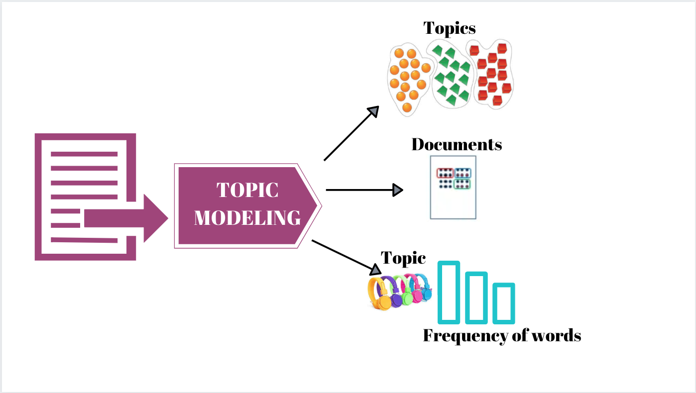
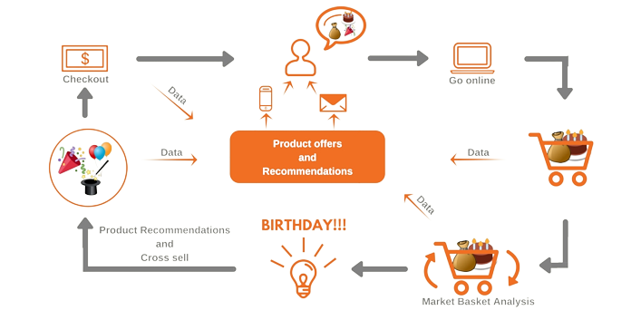

Topic Modelling
Extracted abstract topic of a text using LDA(Latent Dirichlet Allocation).
Cleaned text broadly including removal of URl, mentions and hastags; expansion of contractions; reducing to base form and removal of accents.
Determined Resonable no of topic using Coherence Score.
Visualized final topic allocation through pyLDAvis.

Unreliable News Detection
Detected Unreliable News as True or Fake.
Visualized frequency of words through WordCloud.
Text is cleaned, tokenized, converted into sequences of integers and padded with same length.
Used Bidirectional LSTM for detection and achieved 99% accuracy.
Brain Tumor MRI Detection
Classified Brain Tumor into 4 classes - glioma, meningioma, notumor, pituitary.
Sample image visualized in 4 × 4 grid.
Achieved 96% accuracy using Convolutional Neural Network(CNN) from scratch.
Perfromance visualized using Confusion Matrix, ROC Curve.
Visualized final predictions with confidence.
Time Series Prediction
Predicted next time steps.
Dataset made using 100 points and corresponding cosine function.
Mean Squared Error(MSE) is used as evaluation metric.
Achieved 0.0019 Mean Squared Error(MSE) using simple Recurrent Neural Network with 2 hidden layers.

Alzheimer Disease Classification
Classified Alzheimer Diseases into 4 classes - CONTROL_AD, CONTROL_PD, AD, PD.
Achieved 98% accuracy using Transfer Learning EfficientNetB7.
Image uploaded using ipywidgets and shown corresponding predicted class using IPython.
IMDB Movie Review Classification
Classified IMDB Movie Review into 2 classes.
Achieved 89% accuracy using Convolutional Neural Network from scratch with tweaking different parameters.
Prevented overfitting using BatchNormalization and Dropout.
Market Basket Analysis
Provided recommendations to increase up-selling, cross-selling.
Dataset cleaned and prepared for making products of basket.
Found insights about frequently bought items.
Used Apriori, association rule mining algorithm.
Visualized association rule using network graph.

Laptop Price Prediction
Cleaned data and performed EDA(Exploratory Analysis).
Prepared data for model using feature engineering and feature extraction.
Used R2 Score as evaluation metric.
Achieved r2_score : 0.91 using ensembling, voting regressor